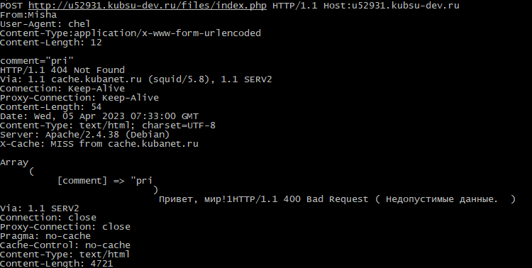
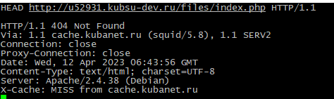

1) Методом GET получили главную страницу в протоколе HTTP 1.0;

2) Методом GET получили внутреннюю страницу в протоколе HTTP 1.1;
kubsu.ru.

3) Определили размер файла file.tar.gz, не скачивая его, с помощью команды HEAD;
4) Определили медиатип ресурса /image.png
5) Отправили комментарий на сервер по адресу /index.php;

6) Получили первые 100 байт файла /file.tar.gz;
7) Определили кодировку ресурса /index.php.
